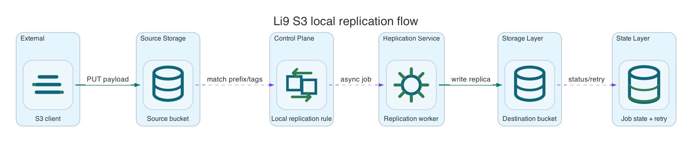
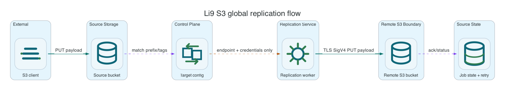

Local and global bucket replication.
Use S3BucketReplication when a bucket needs asynchronous copies for migration, disaster recovery, distribution, or operational separation. Local replication copies to another bucket in the same Li9 S3 runtime. Global replication copies to a remote S3-compatible endpoint through an S3ReplicationTarget.
S3Storage.spec.storage.data.protection, which protects the data plane inside one storage deployment.
How Replication Works
S3BucketReplication owns one replication configuration for a source bucket. Put multiple rules[] in that one CR when the bucket needs several prefixes, tag filters, priorities, or destinations. Do not create several replication CRs for the same source bucket; the runtime has one bucket replication document, so multiple owners would create last-writer-wins behavior or operator conflicts.
Replication is asynchronous. A matching object write is committed to the source bucket first. The metadata plane marks the source object as PENDING, then healing-service copies the body, metadata, tags, versions, and eligible delete markers on its normal cycle. Successful copies mark the source COMPLETED. Local destination objects are marked REPLICA; global destinations receive signed S3 PUT or DELETE requests.
| Mode | Use it when | Destination | Failure behavior |
|---|---|---|---|
Local | Copy within one Li9 S3 deployment for migration, classification, or in-cluster DR patterns. | Another bucket in the same runtime. | Missing bucket or transient runtime error goes to the durable replication outbox and then DLQ after retry exhaustion. |
Global | Copy to another Li9 S3 cluster, ODF, MinIO, AWS-compatible endpoint, or a remote DR site. | Remote bucket on an S3ReplicationTarget. | Remote network, TLS, auth, or bucket errors go to the same durable outbox and retry path. |


Rule IDs And Destinations
rules[].id is optional in the CRD. Use a stable ID in production manifests because it is the human-readable rule identifier returned by get-bucket-replication and used by operators to diagnose which rule matched or failed. Use stable IDs such as reports-copy, logs-to-dr, or gold-dataset-copy; changing an ID is a configuration change.
The destination bucket must exist before enabling the rule. For local replication it can be created through another S3Bucket CR or through the S3 API. For global replication it must exist on the remote endpoint and the referenced credentials must be allowed to write objects, tags, metadata, and delete markers if enabled. If the destination is missing, Li9 S3 does not block the source write; the replication task is recorded for retry and the source replication status can become FAILED until the destination appears and the outbox drains. That behavior is for recovery, not the preferred steady-state configuration.
Before You Start
Use a Ready source S3Bucket and its generated Secret. The endpoint in the Secret is internal unless the selected S3Storage exposes an OpenShift Route.
export NS=li9-s3-runtime
export SOURCE_CR=app-data
export SOURCE_BUCKET="$(oc -n "$NS" get s3bucket "$SOURCE_CR" -o jsonpath='{.status.bucketName}')"
export SECRET="$(oc -n "$NS" get s3bucket "$SOURCE_CR" -o jsonpath='{.status.secretName}')"
export AWS_ACCESS_KEY_ID="$(oc -n "$NS" get secret "$SECRET" -o jsonpath='{.data.AWS_ACCESS_KEY_ID}' | base64 -d)"
export AWS_SECRET_ACCESS_KEY="$(oc -n "$NS" get secret "$SECRET" -o jsonpath='{.data.AWS_SECRET_ACCESS_KEY}' | base64 -d)"
export AWS_REGION="$(oc -n "$NS" get secret "$SECRET" -o jsonpath='{.data.AWS_REGION}' | base64 -d)"
export ENDPOINT="$(oc -n "$NS" get secret "$SECRET" -o jsonpath='{.data.AWS_ENDPOINT_URL}' | base64 -d)"
export AWS_EC2_METADATA_DISABLED=true
li9s3() {
aws --endpoint-url "$ENDPOINT" --region "$AWS_REGION" --no-verify-ssl s3api "$@"
}Local Prefix Replication
Create or select the destination bucket first, then attach a replication rule to the source bucket. The example uses one rule, but production buckets can use several rules in the same S3BucketReplication resource.
export DEST_BUCKET="${SOURCE_BUCKET}-replica"
li9s3 create-bucket --bucket "$DEST_BUCKET"
cat <<EOF | oc -n "$NS" apply -f -
apiVersion: storage.li9.com/v1alpha1
kind: S3BucketReplication
metadata:
name: app-data-replication
spec:
s3BucketRef: app-data
rules:
- id: reports-copy
prefix: reports/
destination:
type: Local
bucketName: $DEST_BUCKET
EOF
oc -n "$NS" wait --for=condition=Ready s3bucketreplication/app-data-replication --timeout=10m
li9s3 get-bucket-replication --bucket "$SOURCE_BUCKET"Global Prefix Replication
Create one S3ReplicationTarget per remote endpoint and reuse it from bucket rules. The credentials Secret is deliberately separate from the replication rule so credential rotation and target validation are owned in one place.
: "${REMOTE_ENDPOINT:?set remote S3-compatible endpoint URL}"
: "${REMOTE_ACCESS_KEY_ID:?set remote replication access key}"
: "${REMOTE_SECRET_ACCESS_KEY:?set remote replication secret key}"
export REMOTE_REGION=li9-dr-1
export REMOTE_BUCKET=app-data-dr
oc -n "$NS" create secret generic remote-dr-s3-credentials \
--from-literal=AWS_ACCESS_KEY_ID="$REMOTE_ACCESS_KEY_ID" \
--from-literal=AWS_SECRET_ACCESS_KEY="$REMOTE_SECRET_ACCESS_KEY"
cat <<EOF | oc -n "$NS" apply -f -
apiVersion: storage.li9.com/v1alpha1
kind: S3ReplicationTarget
metadata:
name: remote-dr
spec:
endpoint: $REMOTE_ENDPOINT
region: $REMOTE_REGION
addressingStyle: PathStyle
credentialsSecretRef:
name: remote-dr-s3-credentials
---
apiVersion: storage.li9.com/v1alpha1
kind: S3BucketReplication
metadata:
name: app-data-global-replication
spec:
s3BucketRef: app-data
rules:
- id: audit-to-remote-dr
prefix: audit/
destination:
type: Global
bucketName: $REMOTE_BUCKET
globalTargetRef:
name: remote-dr
EOF
oc -n "$NS" wait --for=condition=Ready s3replicationtarget/remote-dr --timeout=10m
oc -n "$NS" wait --for=condition=Ready s3bucketreplication/app-data-global-replication --timeout=10mTag Filter Replication
Use tag filters when only selected objects under a prefix are copied. Multiple tags are rendered as an AWS-compatible And filter.
cat <<EOF | oc -n "$NS" apply -f -
apiVersion: storage.li9.com/v1alpha1
kind: S3BucketReplication
metadata:
name: app-data-replication
spec:
s3BucketRef: app-data
rules:
- id: reports-copy
prefix: reports/
destination:
type: Local
bucketName: $DEST_BUCKET
- id: gold-reports-copy
priority: 10
prefix: reports/
tags:
class: gold
team: analytics
destination:
type: Local
bucketName: $DEST_BUCKET
storageClass: STANDARD_IA
EOF
printf 'gold report\n' > /tmp/gold-report.txt
li9s3 put-object \
--bucket "$SOURCE_BUCKET" \
--key reports/gold.txt \
--body /tmp/gold-report.txt \
--tagging 'class=gold&team=analytics'Delete Marker Replication
Enable delete-marker replication only for prefix-only rules. AWS-compatible replication rejects enabled delete-marker replication on tag-based rules, and the operator validates that before sending anything to the runtime. Merge this rule into the same source bucket replication CR; do not create a second CR for the same bucket.
cat <<EOF | oc -n "$NS" apply -f -
apiVersion: storage.li9.com/v1alpha1
kind: S3BucketReplication
metadata:
name: app-data-replication
spec:
s3BucketRef: app-data
rules:
- id: reports-copy
prefix: reports/
destination:
type: Local
bucketName: $DEST_BUCKET
- id: reports-delete-markers
prefix: deleted-reports/
deleteMarkerReplication: true
destination:
type: Local
bucketName: $DEST_BUCKET
EOFVerify Replication
Replication is applied by the runtime healing service on its configured interval. Verify replication by waiting for the next cycle, then checking the destination object and replication status.
printf 'replicated object\n' > /tmp/replicated-object.txt
li9s3 put-object \
--bucket "$SOURCE_BUCKET" \
--key reports/item.txt \
--body /tmp/replicated-object.txt
# Wait for the healing-service replication cycle, then verify destination object.
li9s3 head-object \
--bucket "$DEST_BUCKET" \
--key reports/item.txt
li9s3 head-object \
--bucket "$SOURCE_BUCKET" \
--key reports/item.txt \
--query ReplicationStatusFor global replication, verify with the remote endpoint credentials and endpoint URL:
aws --endpoint-url "$REMOTE_ENDPOINT" \
--region "$REMOTE_REGION" \
s3api head-object \
--bucket "$REMOTE_BUCKET" \
--key audit/item.txtField Reference
| Field | Required | Description |
|---|---|---|
spec.s3BucketRef | One of bucket ref or bucket name | Same-namespace S3Bucket resource. The operator inherits the target S3Storage from the bucket. |
spec.bucketName | One of bucket ref or bucket name | Existing source bucket name for direct configuration when no S3Bucket CR is used. |
spec.storageRef | No | Target runtime for direct bucketName mode. |
spec.roleARN | No | Overrides the local replication role ARN written into generated XML. Defaults to the Li9 local replication role. Global replication uses S3ReplicationTarget credentials. |
spec.rules | Yes | One or more replication rules for the source bucket. Keep all rules for one source bucket in one S3BucketReplication CR. |
spec.rules[].id | No, recommended | Human-readable stable rule ID returned by S3-compatible get-bucket-replication. Use it for diagnostics, audit, and GitOps review. |
spec.rules[].enabled | No | Defaults to true. Set to false to keep the rule in the config but disable matching. |
spec.rules[].priority | No | AWS-compatible rule priority. Use when multiple rules may match the same object. |
spec.rules[].prefix | No | Restricts replication to keys with this prefix. |
spec.rules[].tags | No | Restricts replication to objects with all listed tags. Tag rules cannot enable delete-marker replication. |
spec.rules[].destination.type | No | Local by default. Set Global when the destination bucket is on an S3ReplicationTarget. |
spec.rules[].destination.bucketName | Yes, unless bucketARN is set | Destination bucket name. For local replication this bucket is in the same Li9 runtime. For global replication this is the remote bucket name. The operator renders it as arn:aws:s3:::bucketName. |
spec.rules[].destination.bucketARN | No | Explicit destination ARN for compatibility. Use arn:aws:s3:::bucket format. |
spec.rules[].destination.storageClass | No | Destination storage class override, for example STANDARD_IA. |
spec.rules[].destination.globalTargetRef.name | For Global | References the S3ReplicationTarget that contains endpoint, region, addressing style, and Secret binding. |
spec.rules[].destination.globalTargetRef.namespace | No | Namespace of the target CR. Defaults to the S3BucketReplication namespace. The operator stores target registry entries as namespace/name to avoid collisions. |
spec.rules[].deleteMarkerReplication | No | Defaults to false. Can be true only for non-tag rules. |
S3ReplicationTarget.spec.endpoint | Yes | Remote S3-compatible endpoint URL. |
S3ReplicationTarget.spec.region | No | SigV4 region. Defaults to us-east-1 for AWS client compatibility when omitted. |
S3ReplicationTarget.spec.addressingStyle | No | PathStyle by default. Use VirtualHostedStyle only when DNS and TLS are prepared for bucket-host addressing. |
S3ReplicationTarget.spec.credentialsSecretRef | Yes | Secret with AWS_ACCESS_KEY_ID, AWS_SECRET_ACCESS_KEY, and optional AWS_SESSION_TOKEN. |
S3ReplicationTarget.spec.tls.caBundleSecretRef | No | Secret containing a PEM CA bundle for private remote endpoints. Defaults to key ca.crt. |
S3ReplicationTarget.spec.tls.insecureSkipVerify | No | Disables remote certificate verification for exceptional diagnostics. Keep false in production and use caBundleSecretRef for private CAs. |
Operator Generated Document
The runtime still consumes AWS-compatible XML because AWS CLI and SDK compatibility depend on that shape. The difference is ownership: users own the small CR, and the operator owns the generated document. This avoids hand-written XML in GitOps manifests and lets the operator validate the common footguns before reconciliation.